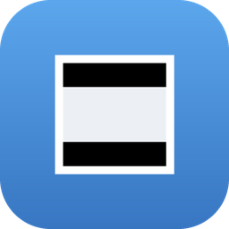
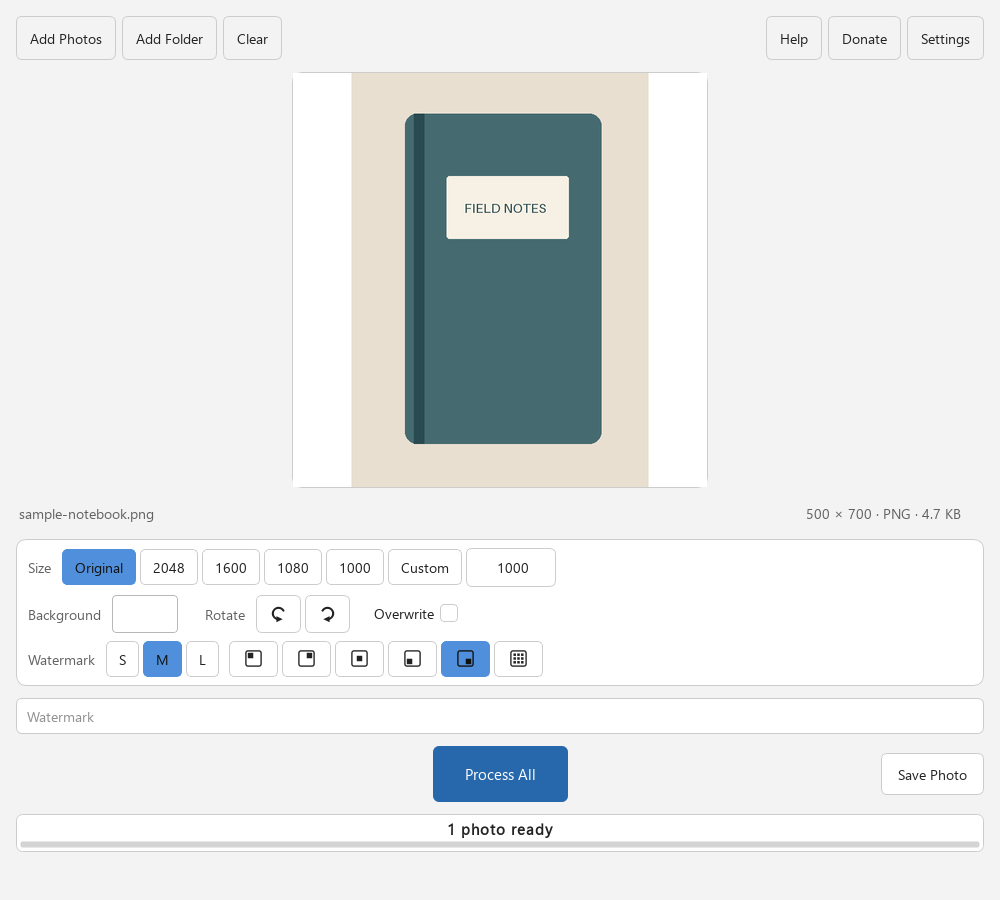

Square Photo Padder
Make any photo square — no cropping, no forced watermarks, no upload.

- Batch process entire folders of photos at once
- Drag and drop files or folders — or use Browse buttons
- Custom background colors, watermarks, rotation, resize presets
- Live preview before processing
- 100% offline — your photos never leave your computer
Download
Free and open source. No account required.
Built for online sellers
Keep the full subject visible in square galleries, collages and catalogues. Padding fills unused space with your chosen background; check whether your destination accepts borders or watermarks.
Frequently asked questions
How do I make a photo square without cropping it?
Instead of cutting parts of the image away, Square Photo Padder adds a colored border (padding) around your photo until it's a perfect square. Nothing is cropped out — the whole photo stays visible, centered on the background color you choose.
Can I prepare a batch of square photos?
Yes. Add a folder, review the preview and process the batch. Choose a common square size (1000, 1080, 1600 or 2048 pixels), or enter a custom size. Check your destination first: eBay disallows added borders and watermarks, and Poshmark uses portrait cover photos.
Is Square Photo Padder really free?
Yes — free and open source under the MIT license. No forced watermarks on your photos, no account, no trial limits. The full source code is on GitHub.
Are my photos uploaded anywhere?
No. Everything runs locally on your computer — the app works completely offline and your photos never leave your machine.
Does it change my original photos?
Not by default. Squared copies are saved next to the originals with collision-safe names like photo (1).jpg. An optional Overwrite mode replaces originals in place if you prefer.